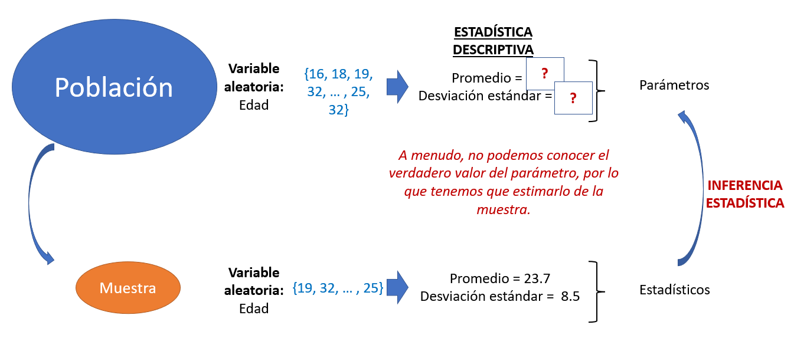
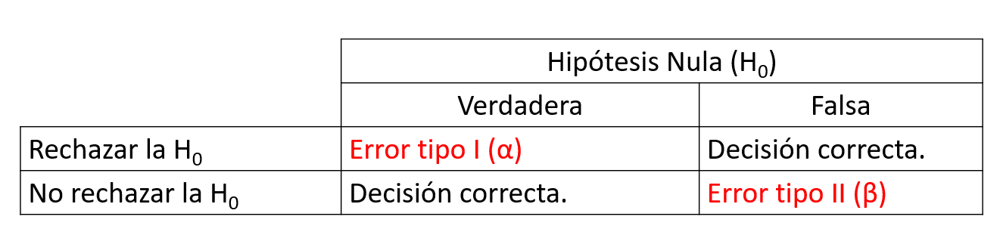
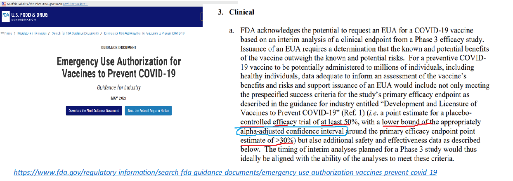

Sesión 2a
Programa de Formación Científica:
Análisis Estadístico 2022
Percy Soto-Becerra
Instituto de Evaluación de Tecnologías en Salud e Investigación - IETSI, EsSalud
@github/psotob91
Junio 22, 2022
Inferencia Estadística
Rama de la Estadística que trata sobre procedimientos que permiten obtener conclusiones de la población basándonos en los datos de una sola muestra.
Hay dos enfoques predominantes:
- Frecuentista
- Bayesianismo
En este curso, como en la mayoría de cursos básicos, seguiremos el enfoque frecuentista.
Inferencia Estadística bajo la lupa frecuentista
Los procedimientos de prueba de hipóteis y de estimación de intervalos de confianza trabajan bajo el enfoque frecuentista.
Es la estadística de pre-grado (y post-grado).
Trabaja bajo la idea que puedes repetir infnitas o muchísimas veces el mismo estudio, pero sobre una nueva muestra aleatoria obtenida.
Estimación

Estimación (cont.)
Prueba de hipótesis
Lógica frecuentista

La distribución muestral es lo importante!
No importa tanto la distribución de la muestra o de la población.
Si no que la distribución de todas las muestras posibles siga cierto comportamiento!
La distribución muestral es lo importante
Prueba de Hipótesis (PH)
“Método para evaluar una afirmación o hipótesis sobre un parámetro poblacional usando datos de una muestra.”
Usar métodos estadísticos para determinar la probabilidad de que nuestras hipótesis sean consistentes con los datos.
- Bajo ciertas suposiciones y puntos de corte, podemos tomar decisiones acerca de en qué creemos o no.
- Como toda decisión, esta se mantiene hasta encontrar nueva evidencia en contra. Son decisiones ‘temporales’.
PH (cont.)
Depende del tipo de variables incluidas, de su distribución, del pareamiento, etc.
Los métodos de prueba de hipótesis que veremos hoy se basan en la Hipótesis Nula, por ende, su nombre completo (a menudo obviado) es: Prueba de Significancia de Hipótesis Nula.
PH (cont.)
Alerta terminológica!
Cuando nos referimos a ‘probar’ una hipótesis nos estamos refiriendo a la traducción del inglés ‘test’, que significa ‘evaluar’, ‘someter a prueba’.
Esta es una evaluación empírica: basada en los dato que tenemos disponibles.
Los datos provienen a menudo de muestras, ergo, parte de lo que observamos podría deberse a que nos tocó ‘por azar’ una muestra extrema o ‘rara’.
A menudo, confundimos ‘probar’ con ‘demostrar’.
En estadística no demostramos nunca.
Solo comprobamos, es decir, vemos datos y confirmamos nuestros hallazgos si son parecidos o los falseamos si son diferentes.
PH (cont.)
Otra alerta terminológica!
Nos interesan hipótesis estadísticas acerca de la población, no sobre la muestra.
Usamos un estadístico calculado de los datos de la muestra para probar una hipótesis acerca de un parámetro de la población.
Nunca probamos hipótesis sobre individuos de la población (p. ej., el peso de un individuo), si no sobre parámetros de la población (p. ej., el promedio de peso de la población).
Para una misma variable pueden interesarnos parámetros diferentes (p. ej., mediana de peso versus media de peso versus desviación estándar de peso).
¿Qué solemos probar o estimar?
- Acerca de un parámetro: PH contra valor hipotético o estimar el parámetro de una población.
Note
Ej. 1. Tengo dudas acerca de si una prueba de laboratorio de anticuerpos mide bien o no: ¿El promedio de anticuerpos en mis pocillos control es igual o diferente que el especificado en el inserto?
Note
Ej. 2. La adherencia a una guía de práctica clínica se evalúa de acuerdo a un punto de corte establecido: ¿El porcentaje de cumplimiento de la GPC es mayor a 80%?
¿Qué solemos probar o estimar? (cont.)
- Acerca de dos o más parámetros:
Note
Ej. 1. Quiero saber si un nuevo medicamento reduce la presión arterial: ¿El promedio de presión arterial de la población que toma el medicamento es menor o mayor igual que el promedio de presión arterial de la población que no toma el medicamento?
Note
Ej. 2. Tengo dudas acerca de si un medicamento aumenta la incidencia de cura de COVID-19: ¿La incidencia acumulada de cura a 1 mes de la población que toma el medicamento es mayor o menor igual que la incidencia acumulada de cura a 1 mes de la población que no toma el medicamento?
La inferencia estadística puede tener 2 usos:
Describir diferencias entre dos poblaciones usando datos de muestra.- Ejemplo: Comparar prevalencia de anemia por regiones. Las regiones no
causananemia, pero saber estas diferencias regionales nos permite conocer las inequidades. Estamos comparando dos poblaciones diferentes.
- Ejemplo: Comparar prevalencia de anemia por regiones. Las regiones no
Hacer inferencias causales.- Ejemplo: Estimar la eficacia o efectividad de las vacunas. Queremos inferir qué le hubiera pasado a una población si tomara un tratamiento contrafactual. Estamos comparando la misma población contra sigo misma en un universo contrafactual.
Procedimiento de prueba de hipótesis
Formular las
hipótesis nulayalterna.Establecer los
criterios de decisiónpara evaluar la veracidad de la hipótesis nula.Asumir que la
H0 es verdaderayestimarlaprobabilidadde observar unvalor igual o más extremoque el valor observado si pudieramosrepetir el estudio infinitas veces(o al menso un número muy grande!). Esto es elvalor p.Tomar una decisión respecto a si creemos o no en la hipótesis nula.
¿Qué es el valor p?
Probabilidad de…
Observar un determinado valor o más extremo.
En una muestra aleatoria de tamaño “n”.
Dado que asumimos que la hipótesis nula es verdadera.
Criterios de decisión
- Basado en el nivel de significancia estadístico (usualmente 5%, pero puede cambiar y a menudo cambia).
Valor p mide la probabilidad de observar, en una muestra, un determinado valor o más extremo que este valor si la muestra proviniera de una población donde la hipótesis nula es verdadero.
Ejemplo 1
Si p = 30%, quiere decir que en 100 muestras al azar de una población donde la H0 es verdadera, en 30 encontraríamos un estadístico igual o más extremo que el observado en la muestra.
Es decir, es muy común encontrar estos valores en muestras tomadas de una población donde la H0 es verdadera.
Por lo tanto decido suponer que no tengo evidencia suficiente para concluir que la H0 sea falsa.
Esta decisión, si es errónea, puede tener consecuencias.
Criterios de decisión (cont.)
Valor p mide la probabilidad de observar, en una muestra, un determinado valor o más extremo que este valor si la muestra proviniera de una población donde la hipótesis nula es verdadero.
Ejemplo 2
Si p = 1%, quiere decir que en 100 muestras al azar de una población donde la H0 es verdadera, solo en 1 encontraríamos un estadístico igual o más extremo al observado.
Es decir, es muy raro encontrar estos valores en muestras tomadas de una población de una población donde la H0 es verdadera. Es posible, pero improbable.
Por lo tanto, pensamos mal, y decidimos suponer que es más probable que la H0 sea falsa a que nos haya tocado una muestra extrema siendo la H0 verdadera.
Decido rechazar la H0.
Esta decisión, si es errónea, puede tener consecuencias.
Criterios de decisión (cont.)

Errores de decisión
Definición de intervalo de confianza al P%
Rango de valores que contendrían el verdadero valor del parámetro P% de las veces, si pudiera repetir el estudio muchísimas veces con muestras aleatorias diferentes del mismo tamaño.
El IC95% significa que si pudiera tuviera 100 estudios similares, con mismo n pero muestras aleatorias diferentes, aprox. 95 estudios tendrían IC que capturarían el verdadero valor.
Definición de intervalo de confianza al P% (cont.)
No significa que el IC95% que yo observo tiene un 95% de obtener el valor del parámetro.
De hecho, la probabilidad de que el IC95% que yo observo en mi estudio contenga el valor del parámetro no se puede estimar en estadística frecuentista, pero sabemos que es 1 (lo contiene) o 0 (no lo contiene). No admite valores intermedios.
Procedimientos para Intervalos de Confianza
Use el valor puntual como la mejor estimación del parámetro disponible basada en los datos.
Estime un error estándar para la distribución muestral del estadístico de interés.
Asuma una distribución muestral conocida para el estaditico de interés.
Con estos dos insumos, calcule los límites del intervalo de confianza.
12 Errores de concepto acerca del valor p

Si la hipótesis nula es cierta, siempre será posible que algunos estudios den valores muy extremos…

Intervalos de confianza y valor p
IC 95% también pueden ser usados para probar hipótesis
A menudo complementan información.
En algunas revistas, el valor p ha sido baneado.
Incluso en revistas donde el valor p no ha sido baneado, el IC95% es indispensable y el valor p un complemento.
Adecuadamente interpretado, el IC da más información que el valor p acerca de la imprecisión (incertidumbre asociada) de la estimación.
Su lectura es tan útil, que varios instrumentos de valoración de la certeza de la evidencia lo usan (p. ej., GRADE).
Intervalos de confianza pueden brindar un poco más de información
- Si se interpretan apropiadamente, pueden “ilustrar” mejor la incertidumbre asociada a la estimación.
Ejemplos de importancia del IC para valorar imprecisión (incertidumbre) de las estimaciones
Ejemplos de importancia del IC para valorar imprecisión (incertidumbre) de las estimaciones (cont.)
Otro ejemplo de importancia del IC para valorar imprecisión (incertidumbre) de las estimaciones
Significancia estadística vs Significancia clínica
La significancia estadística es solo una probabilidad (una medida de incertidumbre asociada a la estimación); siempre existe la posibilidad de error (tipo I y tipo II).
Los intervalos de confianza pueden ayudar a entender mejor esta incertidumbre, si y solo si también se interpretan bien.
La incertidumbre que miden no es la que usualmente pensamos (hay muchos errores de conceptos!!).
Significancia estadística vs Significancia clínica (cont.)
Grandes tamaños de muestra permiten detectar diferencias pequeñas.
Tamaños de muestra muy grandes resultarán en diferencias estadísticamente significativas; incluso si la diferencia clínica no es significativa.
Significancia estadística vs Significancia clínica (cont.)
Las pruebas de hipótesis tradicionales a menudo no se usan en la práctica habitual
Estas pruebas, son los ladrillos sobre los que se construyen otros métodos que son el estándar actual de análisis estadístico en investigación en salud: Modelos estadísticos
Es muy raro encontrar un ejemplo actual donde sea válidas usarlas. Su gran problema es que no permiten controlar el efecto de otras variables.
Las pruebas de hipótesis tradicionales a menudo no se usan en la práctica habitual (cont.)
Usarlas para concluir potenciales efectos puede ser peligroso.
Incluso los ensayos clínicos aleatorizados no hacen uso de estas directamente, sino incorporadas como parte de modelos de regresión.
Usar pruebas estadísticas cuando no son válidas para responder las preguntas científicas es peligroso.
Pruebas de hipótesis versus modelos estadísticos (ejemplo en estudio observacional)

¡Gracias por su atención!
¡Encantado de responder sus consultas!
Percy Soto-Becerra
@psotob91
percys1991@gmail.com

Programa de Formación Científica: Análisis Estadístico 2022 - Sesión 2a